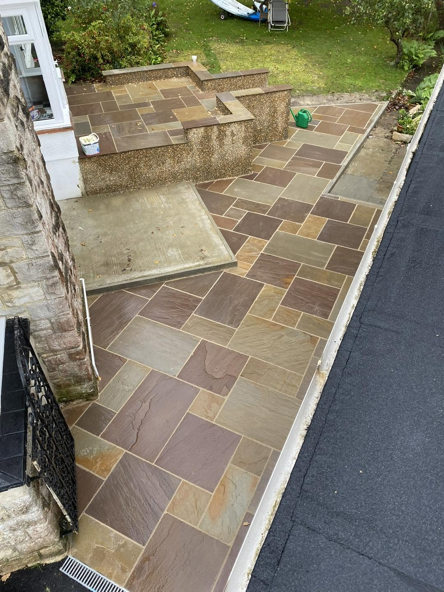
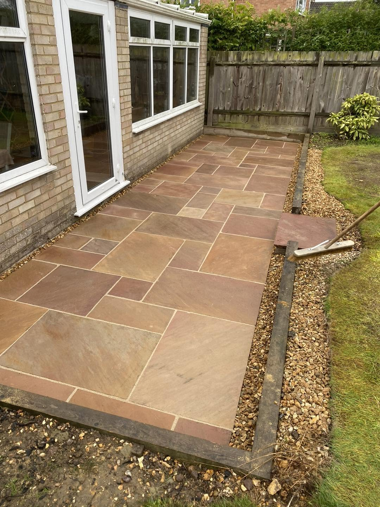
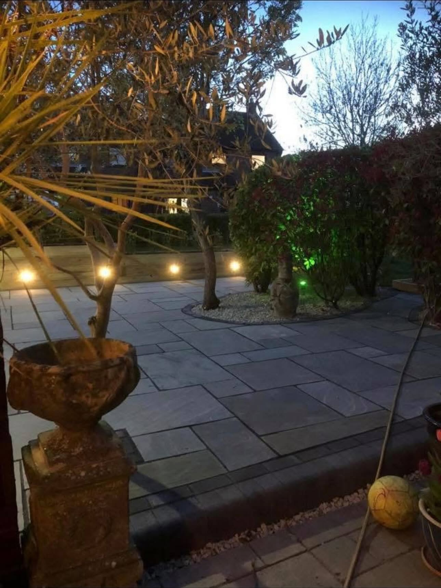
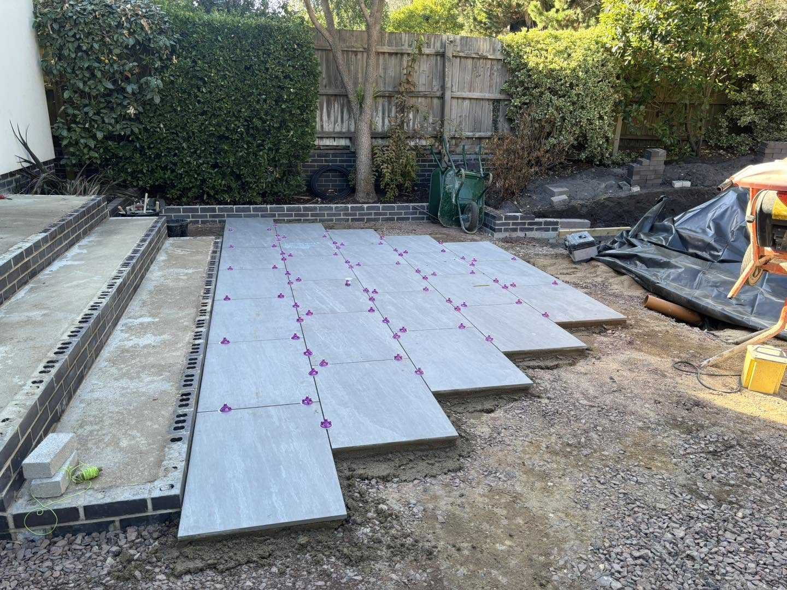
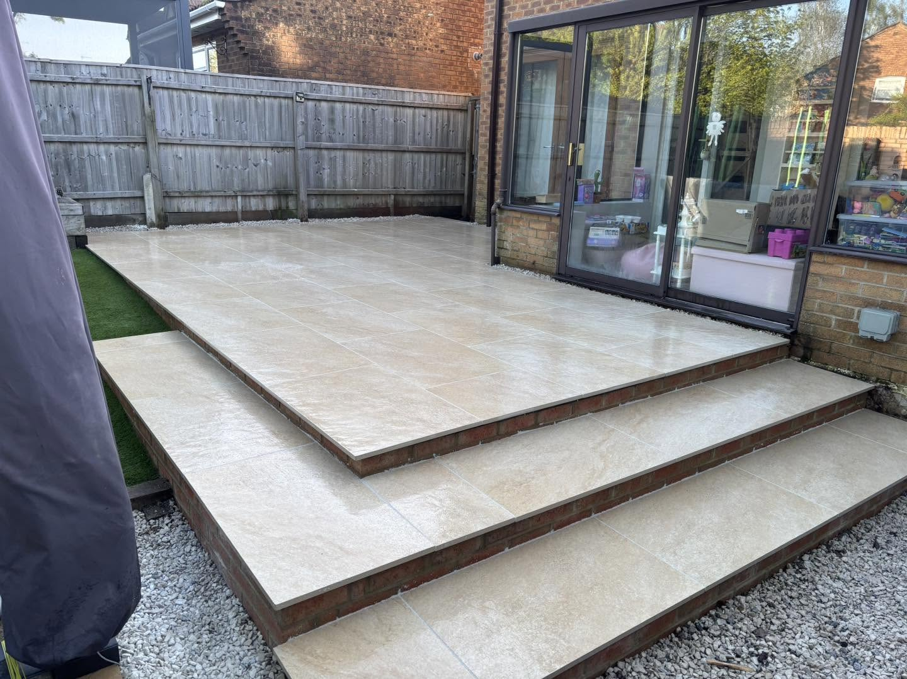
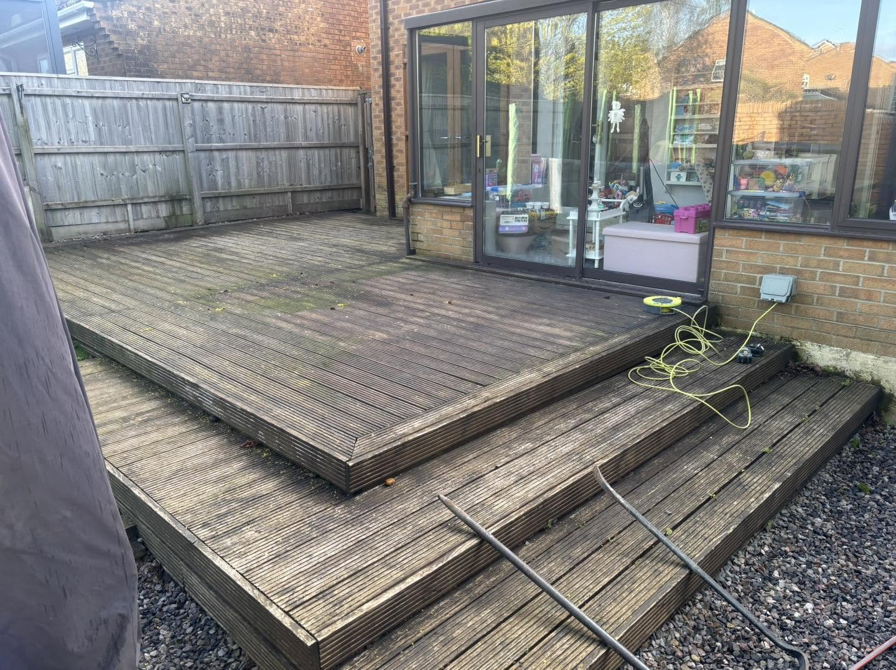
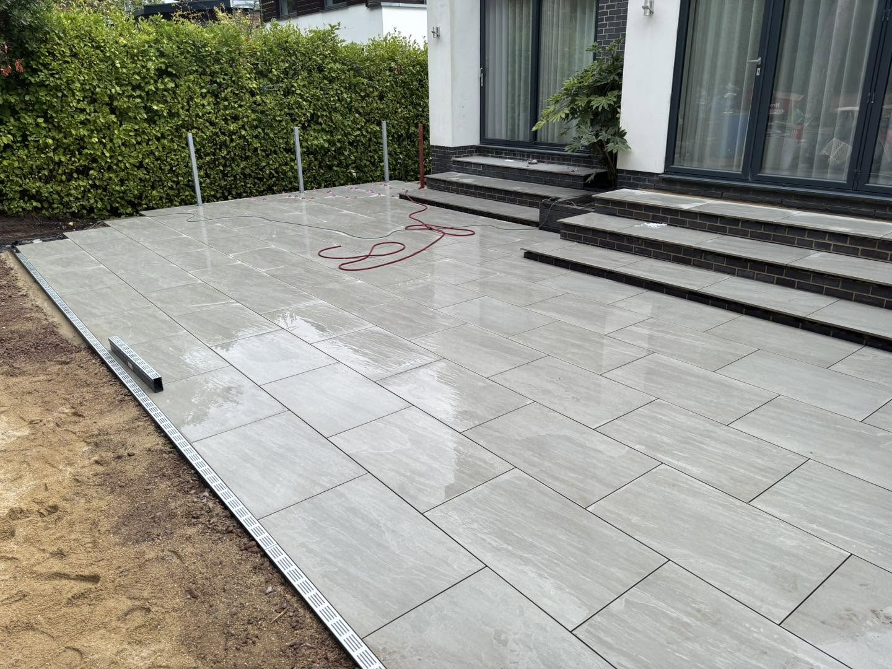

Porcelain Patios
Modern, clean patio installations with crisp lines and a high-end finish.
PATIOS • LANDSCAPING • OUTDOOR SPACES
Patios, driveways, turfing, fencing, planting and complete garden transformations.
WHAT WE DO
From a new patio to a full garden transformation, every project is shaped around the space and the way you want to use it.
Modern, clean patio installations with crisp lines and a high-end finish.
Natural stone and paved areas designed to make more of your garden.
Complete outdoor transformations, planting, borders and garden design.
Natural and artificial turfing for practical, low-maintenance lawns.
Durable exterior surfaces planned around access and drainage.
Fencing, retaining walls, terracing and drainage solutions.
RECENT WORK
Real projects from Southern Patios & Landscaping, from natural stone paving to contemporary porcelain and low-maintenance lawns.





PATIO TRANSFORMATION
A complete change of finish, creating a brighter and more usable space directly from the house.


THE DETAILS MATTER
Careful preparation, considered levels and clean paving lines are what give the finished space its quality.
WHY SOUTHERN?
Projects planned around your space and ideas.
Porcelain and paved patio installations.
Landscaping from hard surfaces to planting.
START YOUR PROJECT
Get in touch with Southern Patios & Landscaping to discuss your outdoor space.